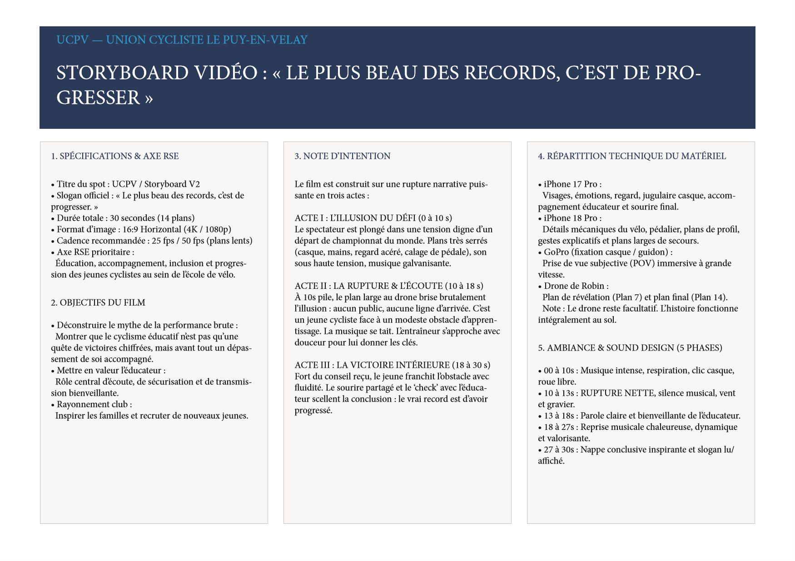
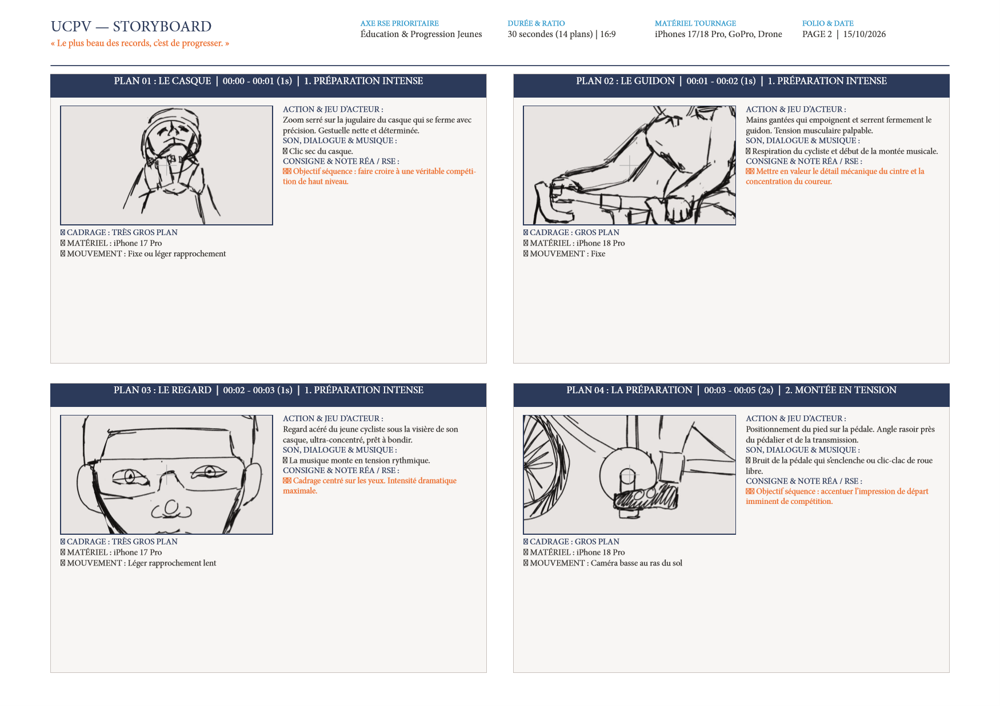
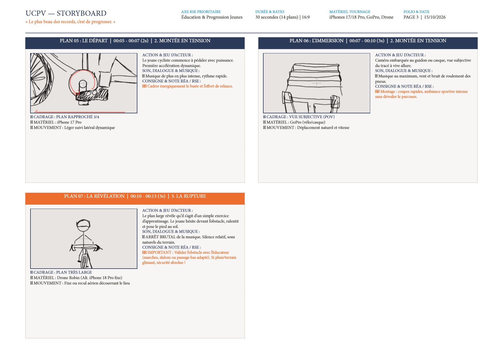
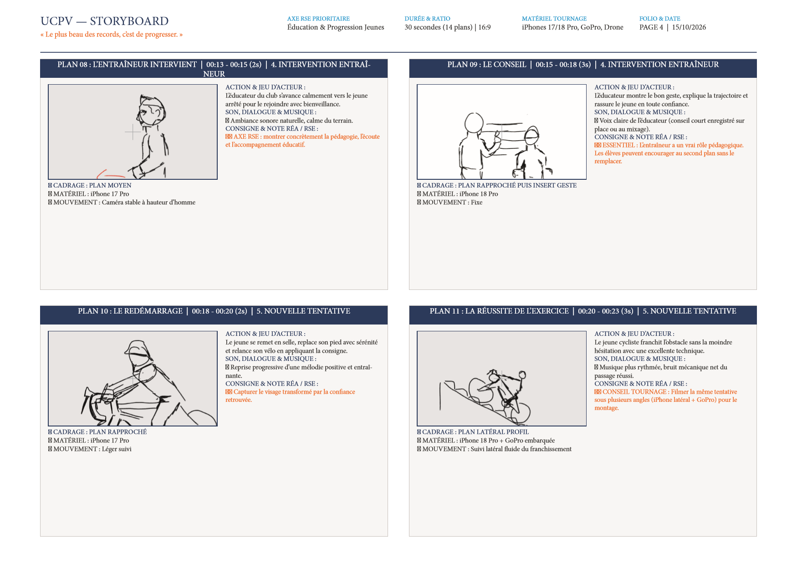
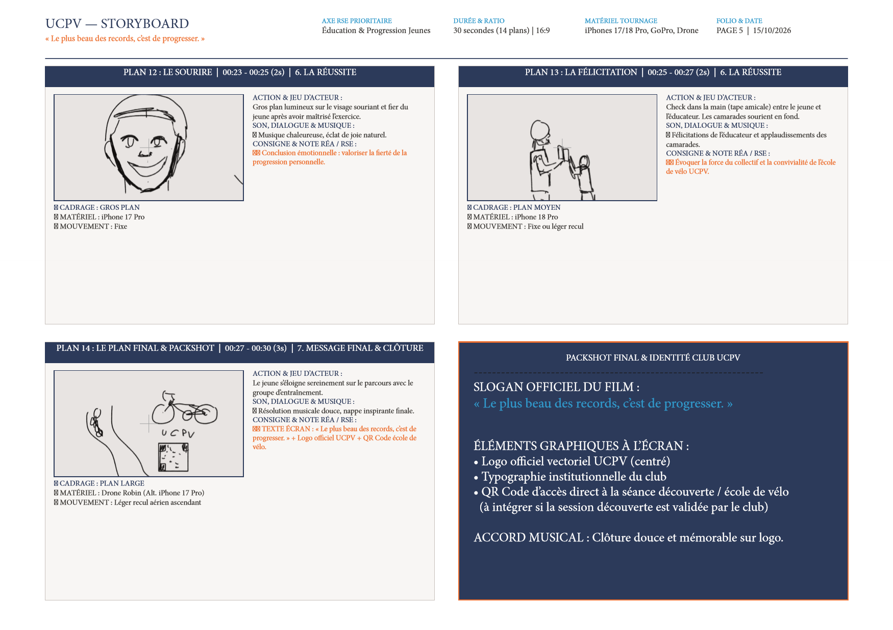
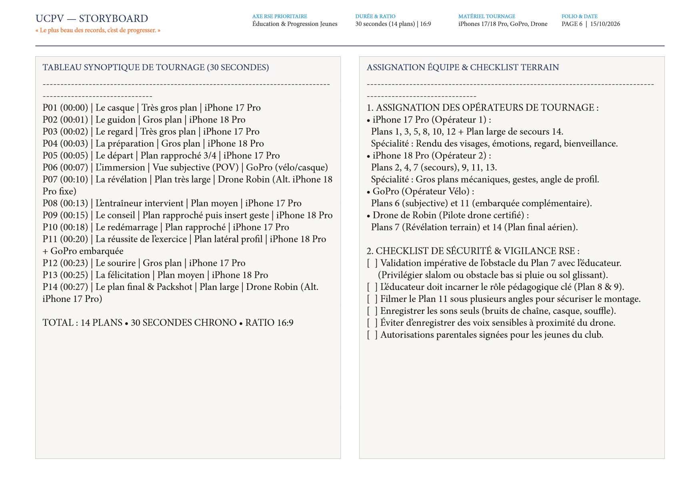
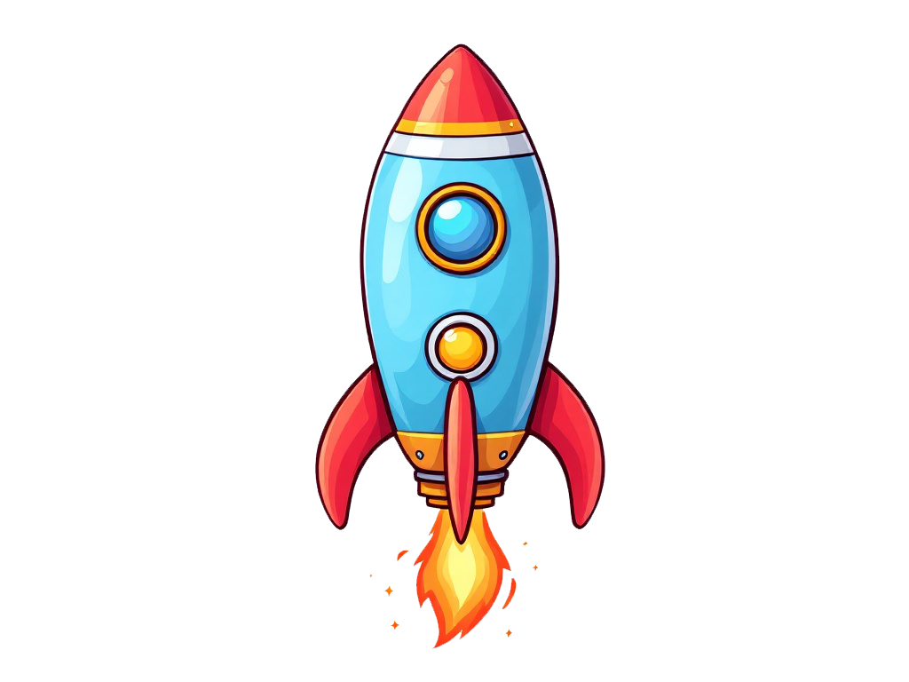
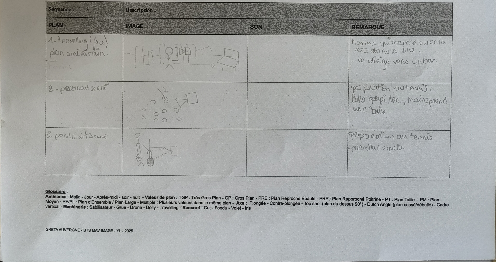
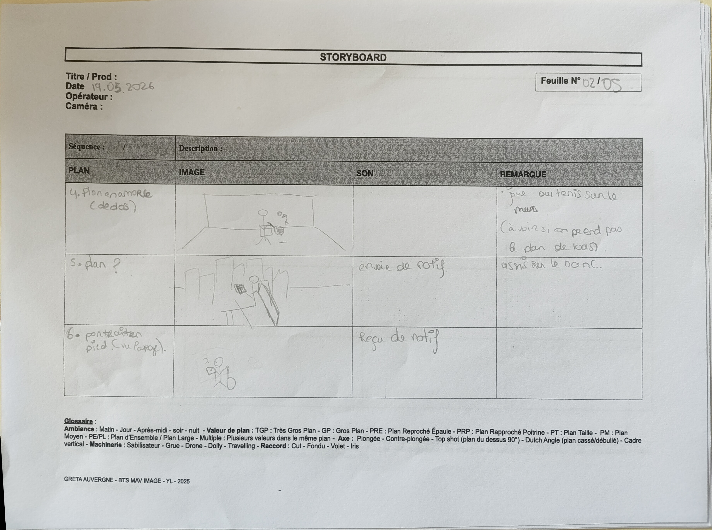
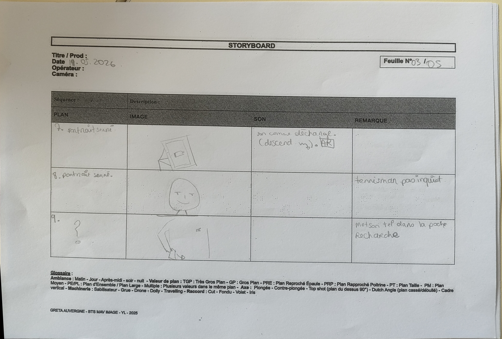

Motion Design & Storyboard
Du premier coup de crayon sur le storyboard de production (14 plans dessinés) jusqu'à l'animation d'images clés, l'espace 3D en parallaxe 2.5D, les animations de logos et les reels vidéo sous Adobe After Effects.

Dossier de Storyboard UCPV (6 pages · 14 plans)
Conception intégrale d'un dossier de storyboard professionnel structuré en 3 actes avec indication des valeurs de cadre, mouvements de caméra (iPhone Pro 4K, GoPro POV, Drone) et sound design.






Effet Parallaxe 2.5D : Phoenix & pétales de rose
Transformation d'illustrations fixes en une scène cinématographique animée en profondeur (2.5D) sous After Effects. Chaque plan (phœnix en arrière-plan, nuées de pétales à mi-distance et pétales floutés au premier plan) est détouré puis réparti sur l'axe Z avec gestion du flou d'objectif.
Animation vectorielle & courbes de vitesse
Préparation des calques vectoriels sous Illustrator et animation des courbes de vitesse (Graph Editor / Easy Ease) dans After Effects : anticipation du mouvement, squash & stretch et défilement multi-plans du décor étoilé.

Animations de logos, Reels 9:16 & Storyboards crayonnés
Planches de storyboard crayonnées à la main (Lacoste Goliath)


